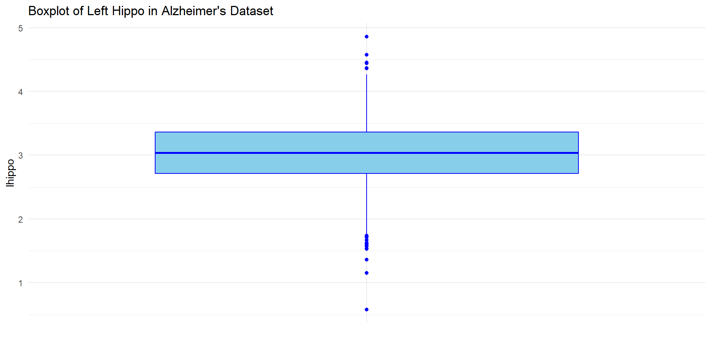

Zhaoxia Yu, Department of Statistics, University of California, Irvine
2024-07-14
Introduction
Describe Data
Describing data is foundational step in the data science life cycle
It involves summarizing and visualizing the main characteristics of a data set.
Describe Data: Key Roles
Understanding Data: Gain insights into the data’s structure, distribution, and underlying patterns.
Informing Analysis: Identify important variables, potential outliers, and data anomalies that need attention.
Guiding Data Cleaning: Detect missing values, inconsistencies, and errors that must be addressed before further analysis.
Describe Data: Descriptive Techniques
Summary Statistics: Measures of central tendency (mean, median) and dispersion (range, variance).
Data Visualization: Graphical methods such as histograms, bar charts, box plots, and scatter plots.
Exploratory Data Analysis (EDA): Techniques to explore data and identify patterns, relationships, and anomalies.
Describe Data: Impact
Data Collection: Ensures the quality and relevance of collected data.
Data Cleaning: Helps identify issues in the data.
Data Analysis: Informs the choice of analysis methods and models.
Model Building: Provides insights into feature selection and engineering.
Decision Making: Supports data-driven decisions by providing a clear understanding of the data.
Some Terminologies
When studying a population, we measure various characteristics, known as variables.
The goal of many scientific studies is to understand the variation of specific characteristics (e.g., BMI, disease status) within the population of interest.
Often, studies focus on exploring potential relationships between different variables.
Example: Cognitive Status and Brain Volume
A subset of data from the Uniform Data Set of National Alzheimer’s Coordinating Center (NACC)
Measurements of brain volume
Cognitive status: normal cognition (0), mild cognitive impairment due to AD (1), or dementia due to AD (2)
Other important information, such as age and gender
We will be using this data set to illustrate how to use different statistical methods to address questions in data science
A Subset of the Data
Code
library(tidyverse)#old-fashioned way to handle data#step 1: read the filealzheimer_data <-read.csv('data/alzheimer_data.csv')#dim(alzheimer_data) #check the dimension #step 2: take a subset of columns of interestalzheimer_data = alzheimer_data[, c('id', 'diagnosis', 'age', 'educ', 'female', 'height', 'weight', 'lhippo', 'rhippo')]#dim(alzheimer_data) #check the dimension#step 3: change diagnosis and gender to factor variablesalzheimer_data[,c("diagnosis")]=as.factor(alzheimer_data[,c("diagnosis")])alzheimer_data[,c("female")]=as.factor(alzheimer_data[,c("female")])#use cool functions from the tidyverse packagealzheimer_data <-read.csv('data/alzheimer_data.csv') %>%select(id, diagnosis, age, educ, female, height, weight, lhippo, rhippo) %>%mutate(diagnosis =as.factor(diagnosis), female =as.factor(female))head(alzheimer_data)
Variables that are the primary focus of our study are called response (or target) variables. They are also called dependent variables.
Variables that help explain or predict the variation in the response variable are known as explanatory/independent variables or predictors, depending on their role.
Statistical analysis typically starts with a scientific question, often framed as a hypothesis testing, estimation, or prediction problem.
Variable Type: Numerical
A Numerical Variable takes numerical values that hold their usual quantitative meaning.
Example: age, height, weight, lhippo, and rhippo take numerical values that hold their usual quantitative meaning.
These variables allow for meaningful analyses, such as calculating averages, and determining maximum or minimum values.
Not all numerical representations indicate a numeric quantity. For example, diagnosis may use numbers.
Variable Type: Categorical
A categorical variable, also known as a discrete or qualitative variable, consists of a limited number of categories.
Example: diagnosis and female. In this data set, `female’ is a binary variable.
Sometimes numerical codes are assigned to categorical variables, but these numbers do not carry their typical quantitative meaning.
Describe a Variable
We begin by exploring data using techniques that examine one variable at a time.
Our goal is to gain a high-level understanding of the data, learn about the potential values for each characteristic, and discover how each characteristic varies among individuals in our sample.
Essentially, we aim to understand the distribution of the variables.
Categorical Variables
Describe a Categorical Variable
Frequency Distribution: the count of observations in each category. The frequency for category \(c\) by is often denoted by \(n_{c}\).
Relative Frequencies: the relative frequency of category \(c\) is defined as
How can you display relative frequencies (i.e., proportions), rather than counts?
Numerical Variables
Understanding Numerical Variables
When analyzing numerical variables, our focus centers on two essential aspects of their distribution: location and spread.
Location: the location of a distribution refers to the central tendency of values, that is, the point around which most values are gathered.
Spread: refers to the dispersion of possible values, that is, how scattered the values are around the location.
Example
Code
# Generating example dataset.seed(321)data1 <-rnorm(100, mean =0, sd =1) # Distribution 1: Mean 0, SD 1data2 <-rnorm(100, mean =0, sd =2) # Distribution 2: Mean 0, SD 2data3 <-rnorm(100, mean =-2, sd =1) # Distribution 3: Mean -2, SD 1# Creating a data frame for plottingdf <-data.frame(Group =rep(c("Group 1", "Group 2", "Group 3"), each =100),Value =c(data1, data2, data3))# Plotting one-dimensional scatter plots (strip plots)library(ggplot2)ggplot(df, aes(x = Group, y = Value, color = Group)) +geom_point()+labs(title ="Distributions with Different Locations and Spreads",x ="Group", y ="Value") +theme_minimal()
Histogram
A histogram resembles a bar graph, where the variable’s values are grouped (binned) into a set number of intervals (bins).
Each bar’s height in the histogram indicates the frequency (count) of observations falling within that interval.
Plotting histograms
Code
histogram_plot <-ggplot(df, aes(x = Value, fill = Group)) +geom_histogram(binwidth =0.5, position ="identity", alpha =0.7) +labs(title ="Histograms of Distributions",x ="Value", y ="Frequency") +theme_minimal()histogram_plot
Histograms
Code
library(gridExtra)# Histogramshistogram_plot1 <-ggplot(df[df$Group =="Group 1", ], aes(x = Value)) +geom_histogram(binwidth =0.5, fill ="skyblue", alpha =0.7) +labs(title ="Histogram: Group 1",x ="Value", y ="Frequency") +theme_minimal()histogram_plot2 <-ggplot(df[df$Group =="Group 2", ], aes(x = Value)) +geom_histogram(binwidth =0.5, fill ="lightgreen", alpha =0.7) +labs(title ="Histogram: Group 2",x ="Value", y ="Frequency") +theme_minimal()histogram_plot3 <-ggplot(df[df$Group =="Group 3", ], aes(x = Value)) +geom_histogram(binwidth =0.5, fill ="salmon", alpha =0.7) +labs(title ="Histogram: Group 3",x ="Value", y ="Frequency") +theme_minimal()# Combine plots into subplotsgrid.arrange(histogram_plot1, histogram_plot2, histogram_plot3,ncol =3, nrow =1, top ="Scatter Plots and Histograms")
The sample median is an alternative measure of location, which is less sensitive to outliers.
Odd \(n\), the median is the number at the middle of the sorted observations.
Even \(n\), the median is the average of the two middle numbers.
Standard Deviation and Variance
Two widely used summary statistics for quantifying dispersion are the sample variance and sample standard deviation.
These statistics rely on the deviation of observed values from the mean, which serves as the center of the distribution.
For each observation, the deviation from the mean is calculated as \(x_{i} - \bar{x}\).
Standard deviation and Variance
The sample variance is a common measure of dispersion based on the squared deviations \[
\begin{equation*}
s^2 = \frac{\sum_{i=1}^n (x_{i} - \bar{x} )^2 }{n-1}.
\end{equation*}
\]
The square root of the variance is called the sample {standard deviation}
\[
\begin{equation*}
s = \sqrt{\frac{\sum_{i=1}^{n}(x_{i} - \bar{x})^{2}}{n-1}},
\end{equation*}
\]
sd(alzheimer_data$age) #calculate sample standard deviation
[1] 11.54586
Quantiles
The median is the value that is greater than or equal to at least half of the values and less than or equal to the other half. The median is also known as the 0.5 quantile.
Similarly, the 0.25 quantile is the value that is greater than or equal to at least 25% of the values.
The 0.75 quantile is the value that is greater than or equal to at least 75% of the values.
In general, the \(q\) quantile is the value that is greater than or equal to at least \(100q\)% of the values.
Sometimes, the \(q\) quantile is referred to as the \(100q\)th percentile.
Quartiles
We can divide the ordered values of a variable into four equal parts using 0.25, 0.5, and 0.75 quantiles.
The corresponding points are denoted \(Q_{1}\), \(Q_{2}\), and \(Q_{3}\), respectively.
We refer to these three points as quartiles, of which \(Q_{1}\) is called the first quartile or the lower quartile, \(Q_{2}\) (i.e., median) is called the second quartile, and \(Q_{3}\) is called the third quartile or upper quartile.
The interval from \(Q_{1}\) (0.25 quantile) to \(Q_{3}\) (0.75 quantile) covers the middle 50% of the ordered data.
Five-Number Summary and Boxplot
The minimum (min), which is the smallest value of the variable in our sample, is the 0 quantile.
Conversely, the maximum (max), which is the largest value of the variable in our sample, is the 1 quantile.
Together with the quartiles \(Q_{1}\), \(Q_{2}\), and \(Q_{3}\), the minimum and maximum values constitute the five-number summary.
These values are typically presented in ascending order: min, first quartile, median, third quartile, max.
This five-number summary provides the 0, 0.25, 0.50, 0.75, and 1 quantiles.
Example
Code
quantile(alzheimer_data$age) #calculate mean
0% 25% 50% 75% 100%
21 64 72 78 100
Five-Number Summary and Boxplot
The five-number summary can be used to derive two measures of dispersion: the range and the interquartile range (IQR).
The range is the difference between the maximum observed value and the minimum observed value.
The interquartile range (IQR) is the difference between the third quartile \(Q_3\) and the first quartile \(Q_1\), represented by the formula: ( = Q_3 - Q_1). This measures the spread of the middle 50% of the
Five-Number Summary and Boxplot
The dashed lines extending from the box are referred to as the whiskers.
The right whisker extends to the largest observed value or \(Q_{3} + 1.5 \times \text{IQR}\), whichever is reached first.
The left whisker extends to the lowest value or \(Q_{1} - 1.5 \times \text{IQR}\), whichever is reached first.
Data points beyond the whiskers are displayed as circles and are considered potential outliers.
Example: left hippocampus volume
Code
# Create a boxplot of ageggplot(alzheimer_data, aes(x ="", y = lhippo)) +# x = "" for a single boxplotgeom_boxplot(fill ="skyblue", color ="blue") +# Customizing boxplot appearancelabs(title ="Boxplot of Left Hippo in Alzheimer's Dataset", x="", y ="lhippo") +# Labels for title and y-axistheme_minimal() # Applying a minimal theme (optional, adjust as needed)

Provlem Solving challenge
How to draw boxplots of left hippo volume by diagnosis groups
How to draw boxplots of left hippo volume by by diagnosis and gender
What is a violin plot and how to draw one?
Example: with two outliers
Code
#generate datax=rnorm(100) #100 data points from normal distribution with mean 0 and sd=1x=c(x, 9.9, 9.8)#add two outliersboxplot(x)